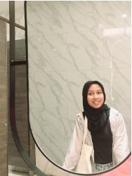

Curriculum Vitae
Data Pribadi
Nama : Willy Syifa Luthfia
NIM : 123140071
Tanggal Lahir : 14 April 2005
Alamat Asal : Lampung Timur
Alamat Domisili : Sukarame, Bandar Lampung
Tentang Saya
Halo! Saya Willy Syifa Luthfia, mahasiswi semester 3 Teknik Informatika ITERA. Saya memiliki minat yang besar dalam bidang teknologi dan pemrograman. Saya selalu bersemangat untuk belajar hal baru dan berbagi pengetahuan dengan orang lain. Saya berharap pengalaman dan keterampilan yang saya miliki dapat memberikan kontribusi positif dalam setiap kesempatan yang ada.
Pendidikan
2023-Sekarang Institut Teknologi Sumatera, S1 Teknik Informatika
2020-2023 SMAN 1 Purbolinggo, Jurusan MIPA
Pengalaman
- September 2024-Sekarang Asisten Praktikum Fisika Dasar 1
- Juli-Agustus 2024 Panitia PPLK Divisi Kreatif
- Januari-Mei 2024 Panitia Dies Natalis Informatika X HMIF Divisi Kreatif
- Juni-Juli 2023 Editing Coding BPS Lampung Timur
Kontak
| Kontak | Keterangan |
|---|---|
| willysyifa14@gmail.com | |
| @wlysyfa | |
| Willy Syifa Luthfia | |
| No Whatsapp | 0821 8149 3109 |
Skill
- Creative Thinking
- Microsoft Office
- TeamWork
- Time Management